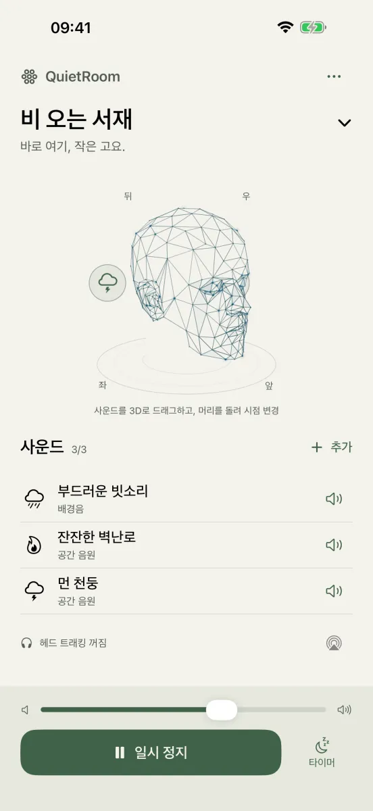
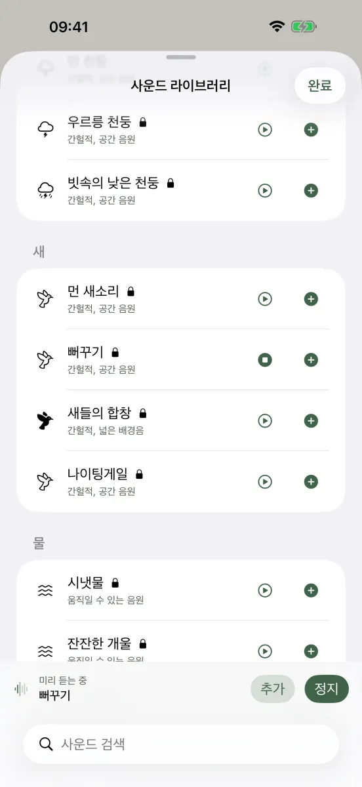
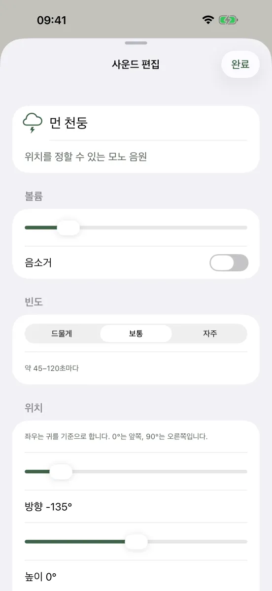
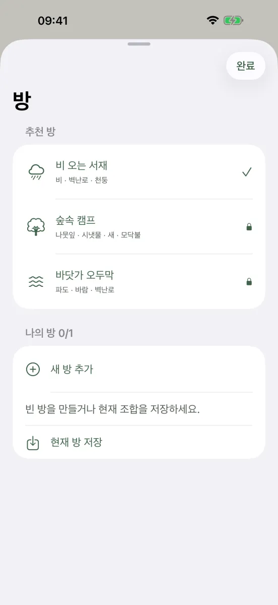

실제 공간 속의 소리
3D 청취자 주변으로 각 사운드를 드래그하세요. 왼쪽이나 오른쪽, 앞이나 뒤, 위나 아래로 옮길 수 있습니다. 방향, 높이, 거리를 정확히 설정할 수도 있습니다. 넓은 배경음은 주변에 안정적으로 머뭅니다.
iPhone용 · iOS 18 이상
QuietRoom은 자연의 소리를 당신 주변에 배치합니다. 왼쪽 창에 내리는 비, 앞쪽의 시냇물, 바로 뒤의 장작불. 헤드폰을 쓰고 듣기를 시작한 뒤, 마음에 들 때까지 방을 다듬어 보세요.

3D 청취자 주변으로 각 사운드를 드래그하세요. 왼쪽이나 오른쪽, 앞이나 뒤, 위나 아래로 옮길 수 있습니다. 방향, 높이, 거리를 정확히 설정할 수도 있습니다. 넓은 배경음은 주변에 안정적으로 머뭅니다.
비, 천둥, 새, 시냇물, 파도, 바람, 풀벌레, 발소리, 불. 녹음이 자연스럽게 달라져 짧은 반복처럼 느껴지지 않습니다. Pro 사운드를 포함해 모든 사운드를 추가하기 전에 미리 들을 수 있습니다.
천둥, 새소리, 물방울, 발소리는 이따금 들려옵니다. 사운드마다 드물게, 보통, 자주 중에서 고르세요. 발소리는 계속 걷기로도 설정할 수 있습니다.
비 오는 서재, 숲속 캠프, 바닷가 오두막에서 시작하거나 빈 방으로 시작하세요. 변경 사항은 자동으로 저장되며, 저장한 방은 언제든 이름 변경, 복제, 대체할 수 있습니다.
호환되는 헤드폰을 쓰면 고개를 돌려도 공간 사운드가 제자리에 머뭅니다. 일반 헤드폰으로도 고정된 공간 음향을 들을 수 있습니다.
계정, 광고, 분석이 없습니다. 사운드가 앱에 포함되어 있어 연결 없이도 듣기, 편집, 저장을 할 수 있습니다. 취침 타이머는 소리를 부드럽게 줄여 줍니다.



1회 구입 · 구독 없음
가격은 해당 지역의 App Store에 표시됩니다.